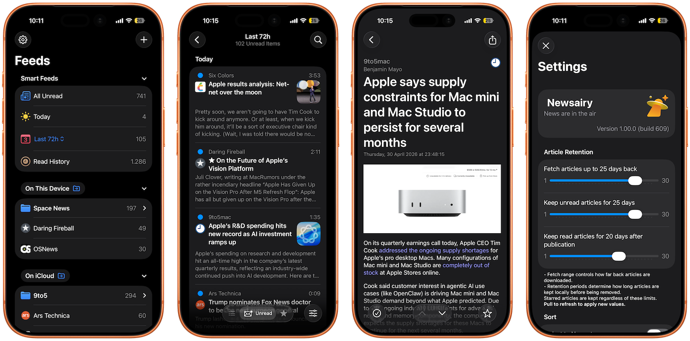
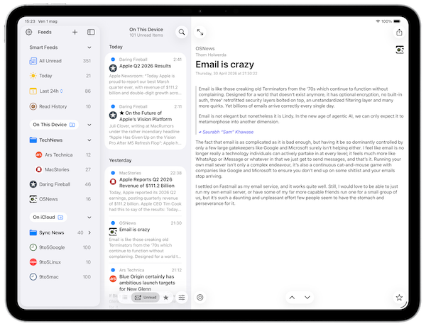
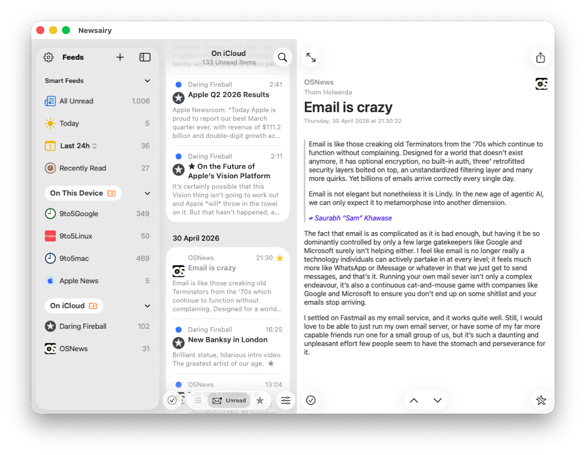

Newsairy 1.08 - Press Kit

Newsairy: a simple, fast and iCloud-native RSS Reader.
⬇ Find app site and screenshots to download at the bottom of the page. ⬇
💡 Why Newsairy
One more RSS reader — why not? Honestly, I did it for the same reasons I see others mentioning: there wasn’t an RSS reader out there that fit me perfectly. So I started working on my own.
Newsairy is designed to get out of your way. No engagement metrics, no trending topics, no algorithm deciding what you see. Just the feeds you choose, delivered cleanly.
🏅 What makes Newsairy different
There are many good RSS readers out there, but I always found at least one thing missing:- Focus on the latest news with Smart Feeds: Today, Last 24 / 48 / 72 hours, Last 7 days and This week
- Build your own Custom Smart Feeds: keyword-based feeds that gather matching articles from every source
- Read History: articles sorted by read date
- Three independent article retention rules:
- Fetch history: how far back to download articles on first load
- Unread retention: how long to keep unread articles from their publication date
- Read retention: how long to keep read articles from their publication date
- Themes: Automatic, Light, Dark, Sepia
- Customisable Article List: thumbnail size, favicon, unread dot, and preview lines (0–6)
- Tune the reading view: pick the font and text size for the article preview
- Native, fast, Liquid Glass (on iOS 26)
- No ads, no tracking, no third-party analytics
🚀 Features

Read the way you want
- Supports RSS, Atom and JSON feeds
- Browse feeds in a clean article list with customisable layout
- Read with the offline preview, the built-in reader (with adjustable font and text size), or open in your browser
- Option to always open articles directly in reader mode
- Mark all articles in a feed or folder as read in one tap
- Organise feeds into folders
- Fast search across all articles
- Star articles to save them - starred items are never deleted by retention rules
Stay in sync
- iCloud keeps your feeds, folders and reading state in sync across iPhone, iPad and Mac
- Sync on automatic schedule, on launch, on resume, or manually with pull-to-refresh

Make it yours
- Configurable swipe actions and article order
- Sort the article list: Newest first, Oldest first, or a Daily timeline
- Import and export subscriptions with standard OPML files
Newsairy Pro - $2.99 / €2.99 (one-time)
- Removes the 6-feed limit (free includes up to 6 local + 6 iCloud feeds)
- Adds TheOldReader, Miniflux, FreshRSS, Feedbin, and Inoreader sync: subscriptions, read state, and starred articles
- Pay once, yours forever. No subscription.
📫 Contact
Have questions or want a promo code? Send an email at qebapps@gmail.com.
📜 Version History
1.08 - June 2026: Reading Flow
Two new time-based Smart Feeds — Last 7 days and This week, with a configurable week start. Finer Mark All as Read, per feed and per folder. New article sorting: Newest first, Oldest first, or a Daily timeline.
1.07 - June 2026: Inoreader Sync
Adds sync with Inoreader, a popular cloud-based feed aggregator. Connect your account to sync subscriptions, read state, and starred articles in both directions, with secure OAuth sign-in.
1.06 - June 2026: Reading Text Options
New Font & Size panel in the reading preview: choose the typeface and text size. Faster search, plus the usual fixes.
1.05 - June 2026: Custom Smart Feeds
Create your own keyword-based feeds that gather matching articles from across all your sources. Give each one a name, a custom colour, and one or more keywords, with an unread count badge and the standard read / unread / starred filters.
1.04 - June 2026: Feedbin & Customisation
Adds Feedbin sync. Full Article List customisation: toggle favicon, unread dot, and preview lines (0–6). New option to always open articles in reader mode. Mark all as read action. Miniflux auto-refresh.
1.02 - May 2026: FreshRSS
Adds sync with FreshRSS, a free self-hostable feed aggregator. Flexible thumbnail sizes in the Article List: none, small, medium, or wide.
1.01 - May 2026: Miniflux
Adds sync with Miniflux, a minimalist self-hosted feed aggregator. Sync your subscriptions, read state, and starred articles with your own Miniflux instance.
1.0 - May 2026: First release
Newsairy 1.0 is a solid, stable foundation. Core reading experience with iCloud sync, smart folders, three reading modes, full customisation, and Newsairy Pro with TheOldReader sync.
🗺 Roadmap
- Next: Mark as Read on Scroll, automatic cover images for more feeds, and performance improvements
- More aggregators and customisation options to follow
🔗 Links
| Screenshots | iPhone | ⬇️ zip file |
| iPhone framed | ⬇️ zip file | |
| iPad | ⬇️ zip file | |
| mac | ⬇️ zip file | |
| Icon | Hi-Res icon | |
| Site | Newsairy | |
| Privacy Policy | ||
| App Store |
|
|
|
|
{kind=link}
✅ Requirements
iOS 18.0 or later. On Mac, requires macOS 15 or later and Apple silicon.
iCloud sync requires an active iCloud account. TheOldReader, Miniflux, FreshRSS, Feedbin, and Inoreader sync require Newsairy Pro.